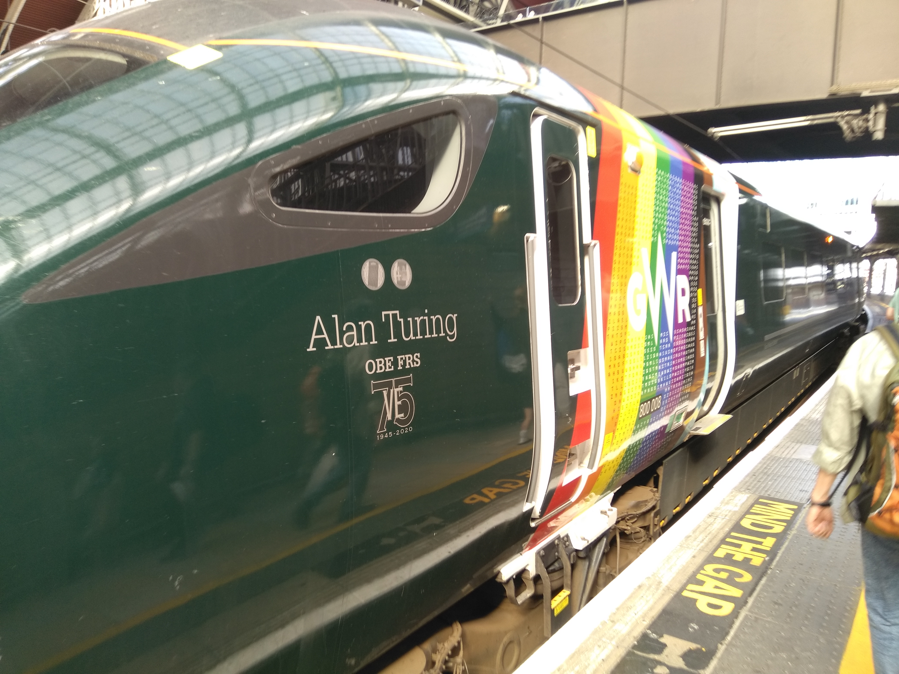
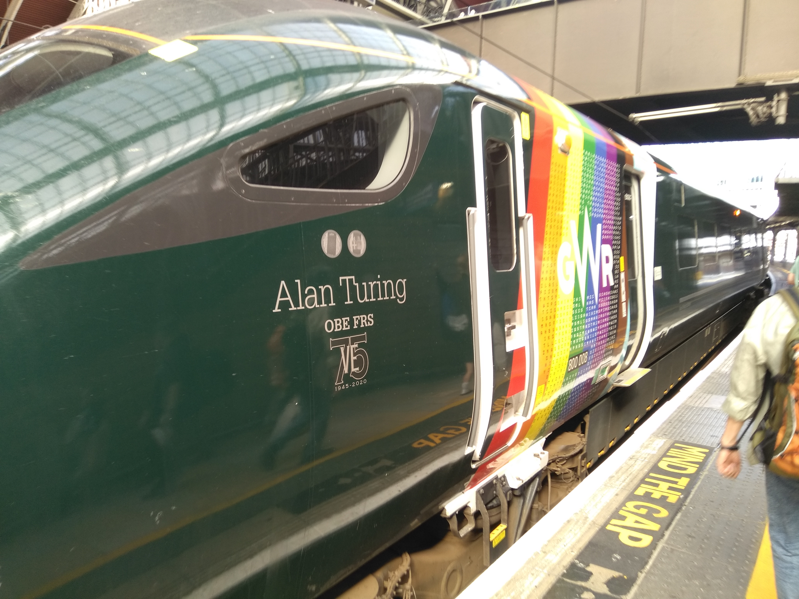
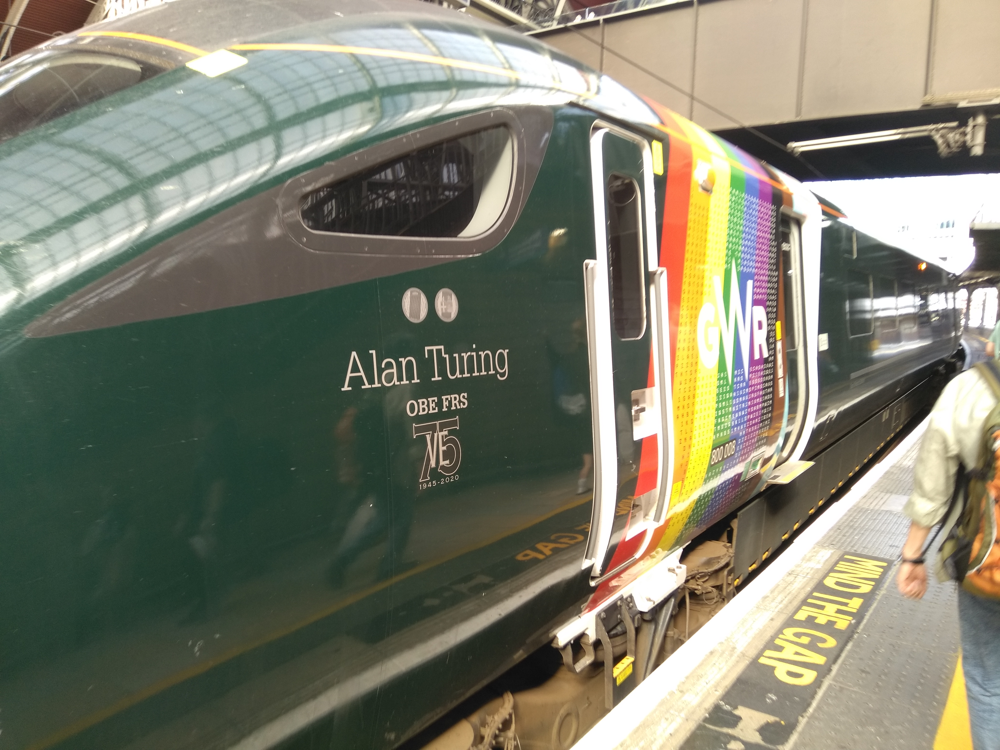

 Ewan-less, Matthew and James will be headed to Brizzle, Bath and Weymouth for a borked seaside adventure
-------------
WELCOME BACK TO THE AMNESIA ZONE!
Join Matthew on the 4th installment of his archaeological dig - it gets slightly better after the last trauma. On this adventure
we had a much better time of things, but the amnesia continues to set in, so excuse the poor reconstruction of this seaside
adventure.
-------------

So Matthew started his day by having a mental breakdown... as did James. We both missed our trains. James eventually got on the world's most crammed train,
whereas Matthew tried to get on the gay train, which then promptly broke. This was not a good start. Indeed, this would not have been the best start to the
adventure, even if we had both caught our trains. This was meant to be another Ewan adventure... except we had apparently failed to inform Ewan of this
plan until the very last moment. Great success!
Our discord messages then reveal that it took us until 10:50 to meet (probably in Didcot) - clearly this was a very bad morning if it took that long
for us to meet, but we eventually managed it. We headed out west, connecting Koppa/Xi to Digamma/Sampi for the first time! The Great Western Mainline was kind of,
maybe, sorta complete!
The discord messages then go quiet, and as you can see below, there are no tweets to go on either... hmm. It turns out we are pretty deep into the
amnesia zone now - this will be a struggle...
AN ARMED STRUGGLE!! The first item on the menu was Filton Abbey Wood, which was the only station left on the line between Bristol Parkway and Temple Meads.
Fortunately, FAW is surprisingly close to Parkway - perhaps, only a 5 minute walk! We only had to walk through an industrial estate, cross a main road, walk
through a car park, and infiltrate an MOD base - what could go wrong??
For some reason, I had brought my flatcaps on this adventure. As you'll see later in the Xmas 22 adventure, this led to the formal introduction of a new character
in the NT cinematic universe (releasing 2027): the communist, who is never seen without his trusty flatcap, nor his undying loyalty to the armed struggle of the
proletariat masses! I can't do this guy justice - watch the videos when they come out. There is a cracking clip of me the communist trying to fall asleep
on a bike rack at FAW, whilst ranting about the military-industrial complex.
We headed down to Bath for the 3rd time in NT history (we passed straight through, but will return later), by taking the Cardiff-Portsmouth train
(I think). This train took us straight down to Trowbridge, where we wandered around aimlessly for the next few minutes, awaiting our next train. I am not 100%
certain why we selected Trowbridge for this, but illi vitae. Finally here we changed to our final, almost 2 hour-long train down to Weymouth (is it just me, or
does every train that heads to the southwestern coast take forever?)

Weymouth is yet another seaside town that Matthew was dragged to against his will. Matthew does not know why he agreed to yet another seaside trip, as he hates
the sand, he hates the freezing cold (and slightly foul-smelling) sea, he hates the desolation of the mostly-abandoned town centres, and he hates the people there.
He was probably coaxed into this particular trip by the promise of the isle of Portland, without either James or Matthew truly comprehending how far away that
actually is. Portland would definitely be a fun NT location. This was more of a type 2.5 fun NT location, due to the presence of some Butlins-type camp at the
end of the beach (I actually cannot find what this was - I just remembered being so deeply unimpressed that I spent the entire visit, in character as The Communist).
Fortunately I remember very little else about our time in Weymouth, but the full horrors will doubtlessly be revealed when/if the videos are ever released...
hopefully this was one of the adventures where we were still filming - we gave up at some point in the amnesia zone.
It was back up the line on our extremely slow train once again, except this time, we took an even slower train on the way back up, to tick off Avoncliff and
Freshford on the approach to Bath. And it was in Bath that we disembarked and headed for a little explore.
Matthew had been to Bath since our last NT visit (β2) on numerous occasions, and James had also certainly visited too, so this became a bit of a nostalgia trip.
Bath is a really lovely city, and we had wanted to visit it with Ewan. We'll have to do this again at some point, with Ewan. Our mistake was probably
doing this during the 1 year that Ewan was not in Bath. Alas - we have now all moved on, so this may be a wee bit more challenging now!
We probably had a nice time in the city, but quite frankly, I only remember buying a bottle of cheap champagne in a local Tesco/Sainsburys, marching up the hill
toward the Circus and the Royal Crescent, sitting down on the lawn overlooking the city, and drinking, talking to camera, and reminiscing. This was nice.

We had a drunken jog down to the station, took this photo (above), and took a train back via Chippenham, back to Paddington and Didcot (and off to Oxford).
I enjoy Digammas (where we actually make it to the southwest... see Digamma 4). We should have more of them.